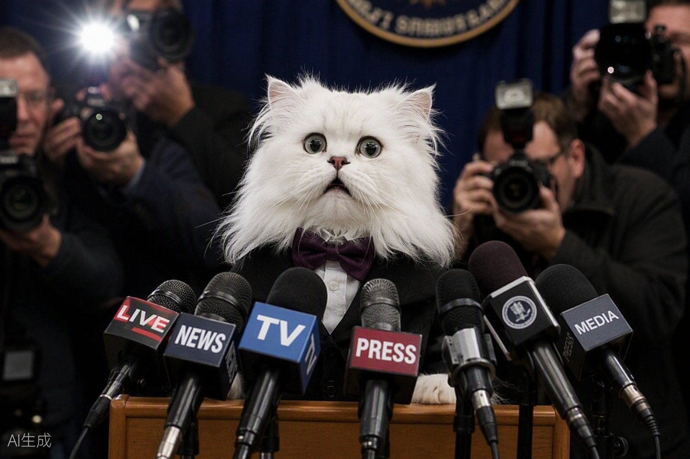
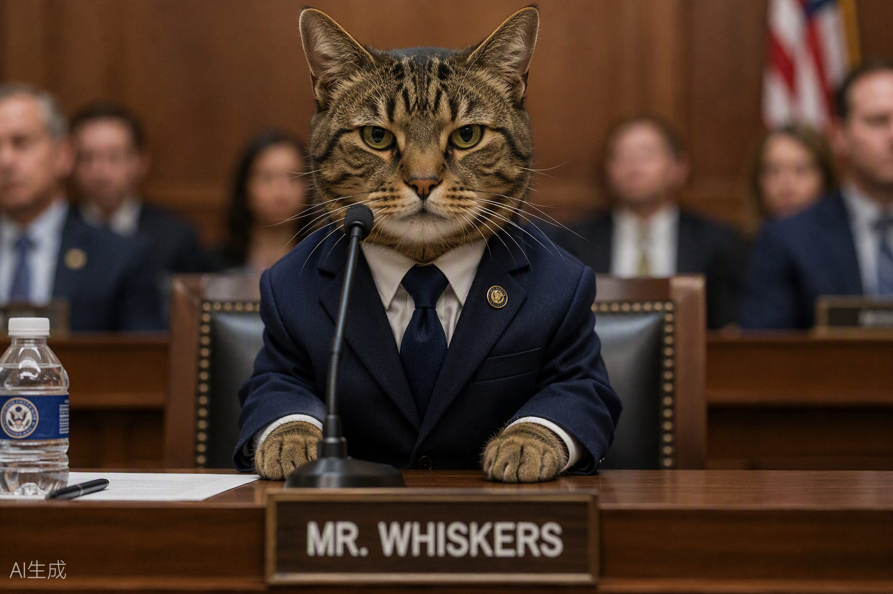

Cnews becomes the world's first memecoin backed by an actual asset: confidence
Founder cites "unprecedented levels of cat" as fundamental value driver, drawing comparisons to the 2021 Dogecoin surge
September 2026
All the news that's fit to purr — since 2026
CATS, CRYPTO & CAPITAL MARKETS
The latest on Cnews, crypto markets, and the Chonk Index

Founder cites "unprecedented levels of cat" as fundamental value driver, drawing comparisons to the 2021 Dogecoin surge

Goldman introduces "Chonkiness-Adjusted Returns" and rates Cnews as "Overweight (Spiritually)"

Central bankers describe the token's price action as "technically unprecedented but spiritually coherent"

Community responds with "SEC = Seriously Envious of Whiskers" campaign; token price rises 34%

Social media analysts study "sustained resonance" pattern as Cnews generates 89M TikTok views

72 hours reconstructed from on-chain data, social media archives, and 47,000 Telegram messages